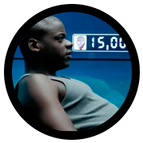
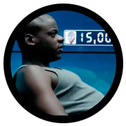

CRÍTICA por Juan Ramón Molina Pos
“Resulta también interesante el modo en que se critica aquí la preponderancia de las pantallas e interfaces en sociedad. Debemos admitir que esto es ya una realidad consumada, y el siguiente paso es preguntarse hacia dónde terminará por llevarnos ésta tendencia.”